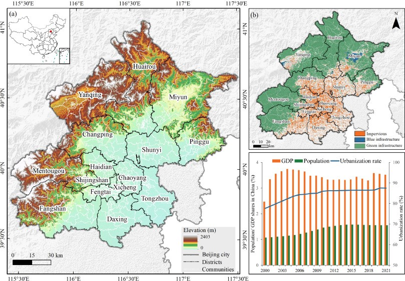

4 Week 4- Policy
4.1 Summary
In the context of climate change, flooding is a major global issue that threatens sustainable urban development. Global climate change has been evident in recent years with the development of global economic integration and urbanisation, and climate change has increased the frequency of extreme rainfall, especially in terms of summer precipitation events (Xu et al. 2018), while urbanisation and degradation of natural environments have exacerbated the impact of urban flooding.
Beijing frequently suffers from severe flooding, exacerbated by the profound effects of natural topography, monsoon climate and rapid urbanisation. Beijing is located in the northwestern part of the North China Plain, between 115° and 118° E longitude and 39° and 42° N latitude, with an area of 16,410 square kilometres altitude ranging from -30 m to 2,270 m, and a topography that slopes from south-east to north-west (Fig. 1). Beijing has a monsoon climate with uneven spatial and temporal distribution of precipitation, with more than 80 per cent of the total annual precipitation concentrated in July and August. The windward slopes of the central region are highly susceptible to heavy precipitation, and floods and droughts frequently occur(Y. Wang et al. 2024). Since the 20th century, Beijing has been subjected to several high-intensity and destructive extreme precipitation events. 2023 saw the heaviest rainfall in 140 years, which caused significant economic losses and human casualties.

In response to the challenges posed by the flooding problem, Beijing has introduced a series of policies:
Beijing Emergency Plan for Flood Control:Adhere to the combination of prevention as the mainstay, prevention, resistance and relief; adhere to the unity of normal disaster reduction and extraordinary disaster relief; shift from focusing on post-disaster relief to focusing on pre-disaster prevention; shift from responding to a single type of disaster to comprehensive disaster reduction; and shift from disaster loss reduction to disaster risk reduction.
Beijing Sponge City Construction:The construction of large urban drainage and flood prevention facilities has been intensified, and the transformation and elimination of urban flood-prone points has been accelerated. Accelerate the implementation of rainwater and sewage diversion, and urban built-up areas should combine the transformation of old neighbourhoods and the construction of micro-circulation roads to improve the coverage of the rainwater pipe network.
31.Promoting a new type of urbanisation centred on people. Implementing urban renewal actions, promoting urban ecological restoration and function improvement projects, enhancing urban flood prevention and drainage capacity, and building sponge and resilient cities.
51.Upgrading the engineering standards for defence against natural disasters such as floods and droughts, geological disasters and earthquakes, accelerating the construction of river control projects, speeding up the removal and reinforcement of reservoirs at risk, and comprehensively promoting the construction of embankments and flood storage areas. It will improve the national emergency management system, strengthen the construction of an emergency material and security system, develop catastrophe insurance, and enhance the capacity for disaster prevention, mitigation, response and relief.
At the same time, solutions to the flooding problem are also relevant to global sustainable development policies:
The United Nations New Urban Agenda :
(g) Cities should adopt and implement disaster risk reduction and management, reduce vulnerability, build resilience and responsiveness to natural and man-made disasters, and contribute to climate change mitigation and adaptation.
United Nations Sustainable Development Goals:
(11) Build inclusive, safe, disaster-resilient and sustainable cities and human settlements.
(13) Take urgent action to address climate change and its impacts.
4.2 Applications
Wang et al. (2024)developed a method to prioritize the development of green infrastructure from the perspective of mitigating urban flood risk, and provided suggestions from the layout of green infrastructure, as shown in Figure 2.
Based on precipitation data from 2000 to 2020, satellite remote sensing data such as land use data and vegetation cover data, as well as socio-economic data, this paper constructs a disaster risk assessment model based on the natural environment, socio-economic and urban planning policy system of Beijing, and concludes that the spatial distribution pattern of flood risk is high in the southeast and low in the northwest. Then, through the superposition of four indicators, namely the identification of high rainwater runoff areas, the distribution of vulnerable populations, the identification of buildings and roads in high flood risk areas, and the proportion of green infrastructure area, the green infrastructure layout priority is determined as shown in Figure 3, so as to provide suggestions for green infrastructure layout planning at the township scale.
4.3 Reflection
For me, this week’s process of collecting and interpreting global as well as local policies and using remote sensing data to solve policy challenges was very interesting and rewarding! Firstly, in the process of collecting policies, it was interesting to watch the different layers of policy documents, from global to national to regional, gradually moving from top-level design to gradually landing on the ground, with the next layer of documents following the guidelines of the higher layer, but adding local features. Secondly, because the remote sensing data and methods this week were grounded in a policy context, it made me feel that what I was learning and doing was really helping to solve the current challenges the world is facing, which made me more determined to continue to learn other things about remote sensing.